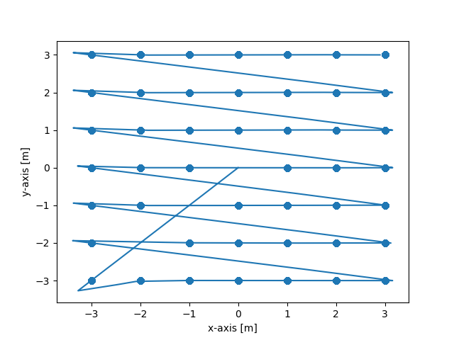

Log for 2018-06-07 - 2018-06-14
Notes for this section:
A lot of work got done offline recently, so this is a condensed log for a while. It has been edited to be a little bit more clear, and to also to remove a bunch of curses, since that probably seems like not the thing to have in here.
6/7/2018
Restarting, because this could use a bit of a fresh start. The yaw continuity thing seems to be working, but I think the whole quadrant thing is giving problems. Look into that, and make another test module for this. We're going to start pretty much from scratch, with a newish workflow. Yaw SMD and behavior should be guaranteed before more on, and that needs to be recorded in this log.
Then, we're going to have an underdamped apporoach to yaw changes until we hit the desired one, then we'll move to our desired point, and stop before we hit it. That's the approach we're taking. No underdamped behavior. All underdamped, and one step at a time, just in 2D, before we add a decoupled z-axis motion with the same principles.
6/8/2018
Determine quadrant function has been written and verified using tests.rs. The function "update_direction_smd()" works properly for quadrants 3 and 4 (tested with +/- 45 degrees (1,+/-1) ) Next step: Use returned quadrant value to make "update_direction_smd()" work for quadrants 2 and 3
New Rules: Nothing should be written without an accompanying unit test. 'cargo test' has made a huge difference, and I'm going to keep that trend going.
Okay, quadrant 2 and 3 have been updated for update_direction_smd(). calculate_yaw() got broken down into a separate function, to make writing a unit test for it easier, and being able to reference that value in main().
Unit tests for calculate yaw have been implemented.
RENAMING "update_position_smd()" as "update_direction()", "update_position_smd()" as "update_position()"
Next step: Need to do forward/backward movement with update_position_smd() Existing implementation does NOT have stable point A to point B motion, even on one axis, and doesn't really even display oscillatory behavior. There's some stuff that's getting played with in the update_position() function, but nothing too promising so far.
6/9/2018
Okay, seriously playing around with the update_position() function now. No stability or correctness should be assumed there until explicitly stated in this log. Unit tests also might be fairly extensive, required performance benchmarks or deriving expected behavior and whatnot.
Okay, so here's something pretty important: because of the way that the intended system works, the velocity kinematics SHOULDN'T be tied to direction. For example, when a plane or a car are moving, their velocity is essentially conserved, but is always in the direction of it's yaw (save for things like skidding, or crazy sharp turns in a plane), because that's how planes and cars do (direction of least resistance and all that). For the AUV that we're talking about, that's NOT the case; if the robot is traveling with a certain momentum, even if it turns, unless an additional net acceleration is produced in the new direction, the existing x-y components of the velocity remain the same (they're not transformed such that they follow the new path). As a result, the kinematic equations need to conserve the existing velocities in these directions, and only add or subtract from those quantities based on accelerations produced along new headings (which can then be trigged) such that we get the respective contributions to those directions. This would also hold (and in fact, would especially hold) for low-external force environments like those experienced by spacecraft.
I'm not sure it's as pretty as a direct A->B underdamped position scheme, but I think that introducing a make-the-velocity-zero() function would be super useful, for both control and error handling. If we were to get outside of a desired distance from our target, we could hit 'stop', turn around, and head back towards it. Plus if we are heading in the the right direction, we could hit 'stop' far enough away that we drifted almost exactly to where we want to go. At the very least, the control logic could probably be reused other places for having the correct forward/reverse accelerations.
I think that to implement this, the main goal is going to be trending towards speed==zero as soon as possible. One of the things to remember is that there is an ideal angle, one that as the acceleration in the forward/backward direction is increased to counteract the existing momentum, both the x- and y- axis velocities will be reduced at a rate that will prevent overshoot of either (i.e. if x_vard and y_vard are equal and positive, using negative acceleration while facing a 60 degree angle will result in the y-velocity becoming negative before the x-velocity hits zero. Therefore, the correct angle of 45 degrees should be reached first, then acceleration can be applied.) Obviously, with any instability in angle control exists, the desired angle might change, so it makes sense that this be iterative for every timestep.
Alright. Looks like the slow-down got implemented, along with unit tests indicating that it works in all xy directions. The implementation of the unit tests are probably not the most elegant ever written, so a good TO_DO might be to go back and re-implement them in said way, time permitting.
That being said, it looks like that will be able to give us fairly stable locus behavior in 2D.
Okay, there's some notes in main() right now about implementing the main control logic, although I think I've got a fair amount of the bugs worked out. There was some weird stuff appearing right off the bat due to the initial starting condition being zero, which led to NaN's that propagated. That was dealt with by turning NaN values to just over zero (0.0001), which seems to have solved the problem.
Locally stable behavior seems to have been achieved, although the main() function process needs to be sorted out. As previously mentioned, there's some logic checking in the library functions, so a full review of those will be needed before progressing forward. Those are <= NEXT STEPS.
6/10/2018
Very brief work was done today, nothing major. Added an 'update_kinematics()' function to DoF methods, although no unit tests or validation have been run on it.
I think it might make 14.mdsense to decouple all of the commands from the actual kinematic updates. So, right now, we calculate our desired accelerations based on a number of factors, included the SMD controller gains, positions, etc., which are then fed Into a kinematic update for those logics, ostensibly once per time-step. However, this seems sorta dangerous. Since we know that we can only apply a single net acceleration to each degree of freedom once per time step, it might make sense to have all of the calculations for those accelerations be done in the control logic ('find the acceleration values to be applied to the thrusters') and then afterwards feed those acceleration values into a kinematic_update function that updates the values for all the degrees of freedom along with the time=time+dt. This would prevent accidentally running more kinematic update for a given time per axis in different functions, and could definitely help with both cleaning up the internals of the library functions, but also make it easier for generally record-keeping of main()'s flow control.
TO_DO: Separate kinematic update logic from the functions that find the desired accelerations.
6/14/2018
The kinematics have been separated from the acceleration control logic, and the main() flow control is pretty close to what I wanted it to be. For some reason, though I still can't seem to get movement directly through the point, which is the end goal.
You know what? I think there's some more unit tests to be implemented (based checking position results with known initial conditions), but I actually am pretty happy with what we've got going on at the moment from a library standpoint. I think the remaining work at the moment is going to be in main(). I think that there's really a small set of goal behaviors.
From an initial zero velocity starting point, we will change direction until it is stable and pointing directly towards where we want to go, and then will begin moving in a straight line towards that point.
If we're too far off from our desired trajectory, we will stop moving. Then, go back to behavior 1
Woo! It looks like we've got the 2D kinematic grid search down! It would be great to implement a few more unit tests for some of the functions (as noted above), but from what I'm looking at, pretty much everything is operating as expected.
Here's an image of what we get as an output, starting at the position (0,0):

Now that some of that is sorted, I'm going to start working on limited the cargo warnings and command-line outputs. A fair amount of that will probably want to be available in the future for debugging, so mostly will just be commented out.
Take a look at the documentation, particularly the README.md for the main GitHub page. It's kind of a wreck. Also, it would be a good idea to start writing more things to the log file, including all var/d/dd for x,y, and yaw, plus the desired values at each time step. The Python backend would be able to do a bit more, then, and having more data to look at would probably be nice to see for future troubleshooting.
TO_DO: Better logging, keep working on documentation.
Also, up next: the z-axis. Woo.